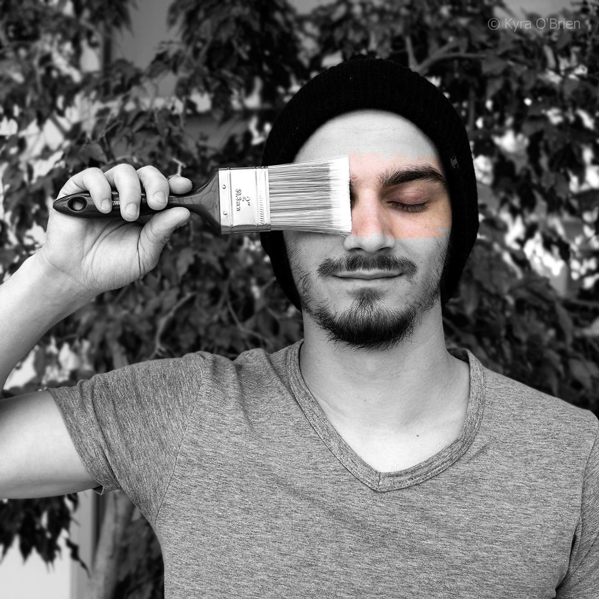
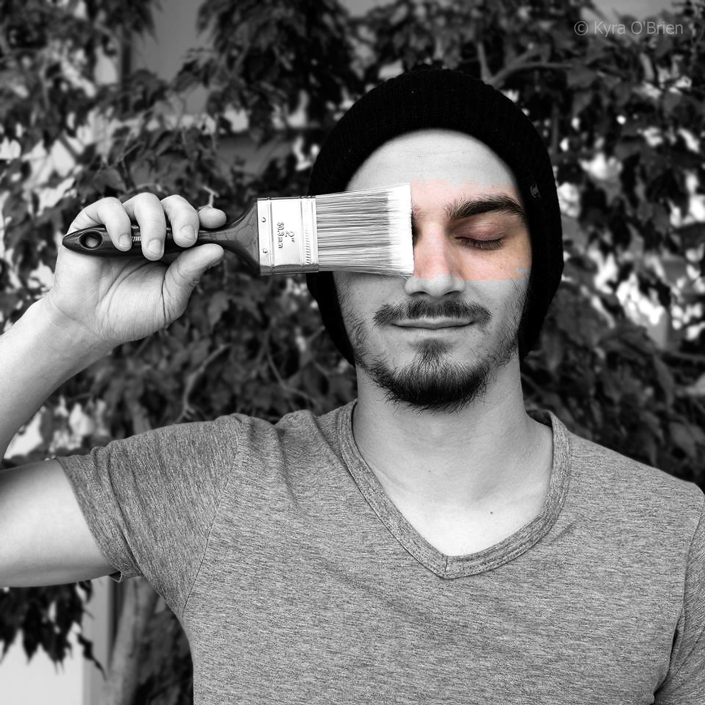

Hi, I'm Kyra O'Brien
I design meaningful, easy-to-use digital experiences that bring people and ideas together.
Photography & Art


 



Program & Skills
I am currently in college studying IT Programming at NSCC.
Skills: HTML, CSS, JavaScript, Python, PostgreSQL
Awards & Certificates

I was a successful recipient of our Teams on Purpose award for going above and beyond during our Pilot Programs, helping bring forward our new application versions in the best possible functionality we could, working collaboratively daily with members of our IT department.
During my switch from CIBC to Simplii (the virtual banking division of CIBC) my first year - I was the proud recipient of our Purpose Award, as nominated by our lovely senior manager Karen Cameron.

LinkedIn Learning certificate earned for completing their Windows 10 Networking training course.

LinkedIn Learning certificate earned for completing their Introduction to PostgreSQL training course.

LinkedIn Learning certificate earned for completing their MongoDB Essentials training course.
LinkedIn Learning certificate earned for completing their Microsoft Access Basics training course.
Greetings fair traveller
I'd love to hear from you! I am open to collaborations, questions, feedback. Feel free to reach out below.
 View/Download My Résumé
View/Download My Résumé
 GitHub
GitHub
 LinkedIn
LinkedIn
I was born in Canada, and am currently residing in Nova Scotia. For visitors interested in exploring the region, see the map and links below.